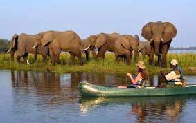
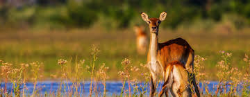

Kafue National Park is one of Zambia's largest and most iconic wildlife reserves, offering a truly immersive experience for nature and wildlife enthusiasts. Located in the western part of the country, it spans over 22,400 square kilometers, making it one of the largest national parks in Africa.

South Luangwa National Park is one of Zambia's most breathtaking wildlife sanctuaries, renowned for its rich biodiversity and unspoiled landscapes. Covering an area of about 9,050 square kilometers, the park is located in the eastern part of the country, along the meandering Luangwa River, which serves as a lifeline for the park's abundant wildlife.

Lower Zambezi National Park is one of Zambia's most spectacular safari destinations, offering an untouched wilderness experience along the majestic Zambezi River. Located in the southeastern part of the country, the park covers 4,092 square kilometers and is bordered by Zimbabwe's Mana Pools National Park, creating a vast transboundary wildlife corridor.
Zambia in the Wild

